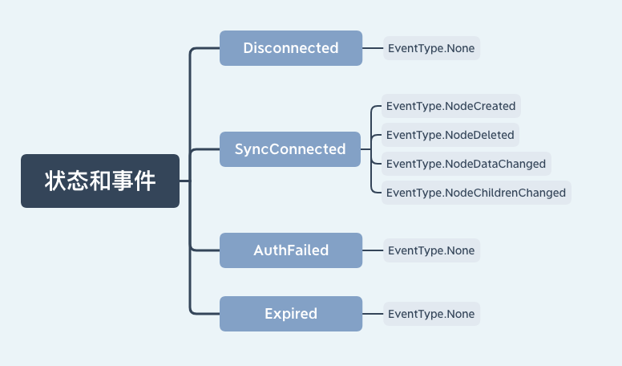
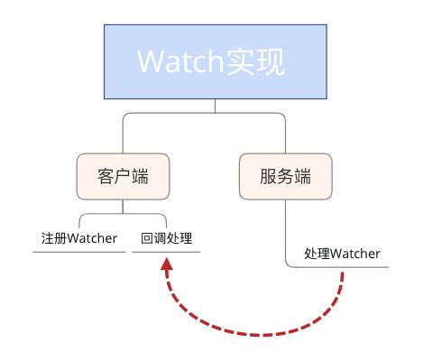
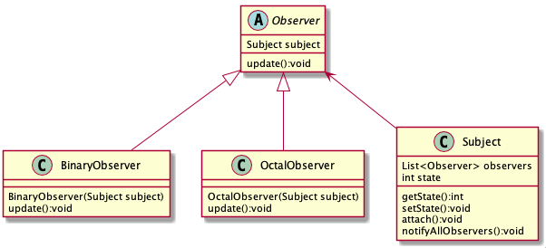
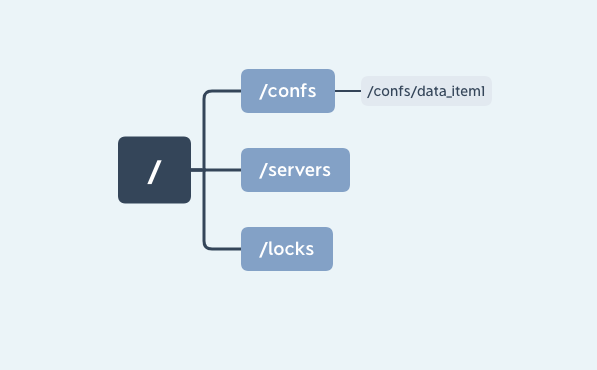

- 00 开篇词：选择 ZooKeeper，一步到位掌握分布式开发.md.html
- 01 ZooKeeper 数据模型：节点的特性与应用.md.html
- 02 发布订阅模式：如何使用 Watch 机制实现分布式通知.md.html
- 03 ACL 权限控制：如何避免未经授权的访问？.md.html
- 04 ZooKeeper 如何进行序列化？.md.html
- 05 深入分析 Jute 的底层实现原理.md.html
- 06 ZooKeeper 的网络通信协议详解.md.html
- 07 单机模式：服务器如何从初始化到对外提供服务？.md.html
- 08 集群模式：服务器如何从初始化到对外提供服务？.md.html
- 09 创建会话：避开日常开发的那些“坑”.md.html
- 10 ClientCnxn：客户端核心工作类工作原理解析.md.html
- 11 分桶策略：如何实现高效的会话管理？.md.html
- 12 服务端是如何处理一次会话请求的？.md.html
- 13 Curator：如何降低 ZooKeeper 使用的复杂性？.md.html
- 14 Leader 选举：如何保证分布式数据的一致性？.md.html
- 15 ZooKeeper 究竟是怎么选中 Leader 的？.md.html
- 16 ZooKeeper 集群中 Leader 与 Follower 的数据同步策略.md.html
- 17 集群中 Leader 的作用：事务的请求处理与调度分析.md.html
- 18 集群中 Follow 的作用：非事务请求的处理与 Leader 的选举分析.md.html
- 19 Observer 的作用与 Follow 有哪些不同？.md.html
- 20 一个运行中的 ZooKeeper 服务会产生哪些数据和文件？.md.html
- 21 ZooKeeper 分布式锁：实现和原理解析.md.html
- 22 基于 ZooKeeper 命名服务的应用：分布式 ID 生成器.md.html
- 23 使用 ZooKeeper 实现负载均衡服务器功能.md.html
- 24 ZooKeeper 在 Kafka 和 Dubbo 中的工业级实现案例分析.md.html
- 25 如何搭建一个高可用的 ZooKeeper 生产环境？.md.html
- 26 JConsole 与四字母命令：如何监控服务器上 ZooKeeper 的运行状态？.md.html
- 27 crontab 与 PurgeTxnLog：线上系统日志清理的最佳时间和方式.md.html
- 28 彻底掌握二阶段提交三阶段提交算法原理.md.html
- 29 ZAB 协议算法：崩溃恢复和消息广播.md.html
- 30 ZAB 与 Paxos 算法的联系与区别.md.html
- 31 ZooKeeper 中二阶段提交算法的实现分析.md.html
- 32 ZooKeeper 数据存储底层实现解析.md.html
- 33 结束语 分布技术发展与 ZooKeeper 应用前景.md.html
02 发布订阅模式：如何使用 Watch 机制实现分布式通知
上个课时我们学习了 ZooKeeper 数据模型中的节点相关知识，并利用节点的特性实现了几个业务场景。本节课我们来学习 ZooKeeper 又一关键技术——Watch 监控机制，并用它实现一个发布订阅功能。
在日常生活中也有很多订阅发布的场景。比如我们喜欢观看某一个剧集，视频网站会有一个订阅按钮，用户可以订阅自己喜欢的电视剧，当有新的剧集发布时，网站会通知该用户第一时间观看。或者我们在网站上看到一件心仪的商品，但是当前没有库存，网站会提供到货通知的功能，我们开启这个商品的到货通知功能后，商品补货的时候会通知我们，之后就可以进行购买了。ZooKeeper 中的 Watch 机制很像这些日常的应用场景，其中的客户端就是用户，而服务端的数据节点就好像是我们订阅的商品或剧集。
现在我们可以从技术实现的角度分析一下上边提到的这些场景，无论是订阅一集电视剧还是订购一件商品。都有几个核心节点，即用户端注册服务、服务端处理请求、客户端收到回调后执行相应的操作。接下来我们也带着这个观点来看一下 ZooKeeper 中的 Watch 机制是如何实现的。
Watch 机制是如何实现的
正如我们可以通过点击视频网站上的”收藏“按钮来订阅我们喜欢的内容，ZooKeeper 的客户端也可以通过 Watch 机制来订阅当服务器上某一节点的数据或状态发生变化时收到相应的通知，我们可以通过向 ZooKeeper 客户端的构造方法中传递 Watcher 参数的方式实现：
new ZooKeeper(String connectString, int sessionTimeout, Watcher watcher)
上面代码的意思是定义了一个了 ZooKeeper 客户端对象实例，并传入三个参数：
connectString 服务端地址
sessionTimeout：超时时间
Watcher：监控事件
这个 Watcher 将作为整个 ZooKeeper 会话期间的上下文 ，一直被保存在客户端 ZKWatchManager 的 defaultWatcher 中。
除此之外，ZooKeeper 客户端也可以通过 getData、exists 和 getChildren 三个接口来向 ZooKeeper 服务器注册 Watcher，从而方便地在不同的情况下添加 Watch 事件：
getData(String path, Watcher watcher, Stat stat)
知道了 ZooKeeper 添加服务器监控事件的方式，下面我们来讲解一下触发通知的条件。

上图中列出了客户端在不同会话状态下，相应的在服务器节点所能支持的事件类型。例如在客户端连接服务端的时候，可以对数据节点的创建、删除、数据变更、子节点的更新等操作进行监控。
现在我们已经从应用层的角度了解了 ZooKeeper 中的 Watch 机制，而学习 ZooKeeper 过程中一个大问题就是入门容易精通难，像上边我们通过几个简单的 API 调用就可以对服务器的节点状态变更进行监控，但是在实际生产环境中我们会遇到很多意想不到的问题，要想解决好这些问题就要深入理解 Watch 的底层实现机制。
Watch 机制的底层原理
现在我们就深入底层了解其背后的实现原理。与上个课时直接通过底层代码的调用过程来分析不同，在 Watch 底层实现的分析阶段，由于 Watch 机制涉及了客户端和服务端的多个函数和操作节点，单单按照程序执行流程分析跳跃性对整体实现机制的理解难度大，这也是我在学习 Watch 这部分底层实现遇到的问题。为了更好地阐述 Watch 机制，我们另辟蹊径，从设计模式角度出发来分析其底层实现：

最初我在开始学习 Watch 机制的时候，它给我的第一印象是，其结构很像设计模式中的”观察者模式“，一个对象或者数据节点可能会被多个客户端监控，当对应事件被触发时，会通知这些对象或客户端。我们可以将 Watch 机制理解为是分布式环境下的观察者模式。所以接下来我们就以观察者模式的角度点来看看 ZooKeeper 底层 Watch 是如何实现的。

通常我们在实现观察者模式时，最核心或者说关键的代码就是创建一个列表来存放观察者。 而在 ZooKeeper 中则是在客户端和服务器端分别实现两个存放观察者列表，即：ZKWatchManager 和 WatchManager。其核心操作就是围绕着这两个展开的。
客户端 Watch 注册实现过程
我们先看一下客户端的实现过程，在发送一个 Watch 监控事件的会话请求时，ZooKeeper 客户端主要做了两个工作：
- 标记该会话是一个带有 Watch 事件的请求
- 将 Watch 事件存储到 ZKWatchManager
我们以 getData 接口为例。当发送一个带有 Watch 事件的请求时，客户端首先会把该会话标记为带有 Watch 监控的事件请求，之后通过 DataWatchRegistration 类来保存 watcher 事件和节点的对应关系：
public byte[] getData(final String path, Watcher watcher, Stat stat){
...
WatchRegistration wcb = null;
if (watcher != null) {
wcb = new DataWatchRegistration(watcher, clientPath);
}
RequestHeader h = new RequestHeader();
request.setWatch(watcher != null);
...
GetDataResponse response = new GetDataResponse();
ReplyHeader r = cnxn.submitRequest(h, request, response, wcb);
}
之后客户端向服务器发送请求时，是将请求封装成一个 Packet 对象，并添加到一个等待发送队列 outgoingQueue 中：
public Packet queuePacket(RequestHeader h, ReplyHeader r，...) {
Packet packet = null;
...
packet = new Packet(h, r, request, response, watchRegistration);
...
outgoingQueue.add(packet);
...
return packet;
}
最后，ZooKeeper 客户端就会向服务器端发送这个请求，完成请求发送后。调用负责处理服务器响应的 SendThread 线程类中的 readResponse 方法接收服务端的回调，并在最后执行 finishPacket（）方法将 Watch 注册到 ZKWatchManager 中：
private void finishPacket(Packet p) {
int err = p.replyHeader.getErr();
if (p.watchRegistration != null) {
p.watchRegistration.register(err);
}
...
}
服务端 Watch 注册实现过程
介绍完客户端对 Watch 请求的发送过程，下面我们来看一下服务端是如何处理一个 Watch 事件。
Zookeeper 服务端处理 Watch 事件基本有 2 个过程：
- 解析收到的请求是否带有 Watch 注册事件
- 将对应的 Watch 事件存储到 WatchManager
下面我们分别对这 2 个步骤进行分析：
当 ZooKeeper 服务器接收到一个客户端请求后，首先会对请求进行解析，判断该请求是否包含 Watch 事件。这在 ZooKeeper 底层是通过 FinalRequestProcessor 类中的 processRequest 函数实现的。当 getDataRequest.getWatch() 值为 True 时，表明该请求需要进行 Watch 监控注册。并通过 zks.getZKDatabase().getData 函数将 Watch 事件注册到服务端的 WatchManager 中。
public void processRequest(Request request) {
...
byte b[] = zks.getZKDatabase().getData(getDataRequest.getPath(), stat,
getDataRequest.getWatch() ? cnxn : null);
rsp = new GetDataResponse(b, stat);
..
}
服务端 Watch 事件的触发过程
在客户端和服务端都对 watch 注册完成后，我们接下来看一下在 ZooKeeper 中触发一个 Watch 事件的底层实现过程：
我们以 setData 接口即“节点数据内容发生变更”事件为例。在 setData 方法内部执行完对节点数据的变更后，会调用 WatchManager.triggerWatch 方法触发数据变更事件。
public Stat setData(String path, byte data[], ...){
Stat s = new Stat();
DataNode n = nodes.get(path);
...
dataWatches.triggerWatch(path, EventType.NodeDataChanged);
return s;
}
下面我们进入 triggerWatch 函数内部来看看他究竟做了哪些工作。首先，封装了一个具有会话状态、事件类型、数据节点 3 种属性的 WatchedEvent 对象。之后查询该节点注册的 Watch 事件，如果为空说明该节点没有注册过 Watch 事件。如果存在 Watch 事件则添加到定义的 Wathcers 集合中，并在 WatchManager 管理中删除。最后，通过调用 process 方法向客户端发送通知。
Set<Watcher> triggerWatch(String path, EventType type...) {
WatchedEvent e = new WatchedEvent(type,
KeeperState.SyncConnected, path);
Set<Watcher> watchers;
synchronized (this) {
watchers = watchTable.remove(path);
...
for (Watcher w : watchers) {
Set<String> paths = watch2Paths.get(w);
if (paths != null) {
paths.remove(path);
}
}
}
for (Watcher w : watchers) {
if (supress != null && supress.contains(w)) {
continue;
}
w.process(e);
}
return watchers;
}
客户端回调的处理过程
知道了服务器端 Watch 事件的触发过程后，我们来看一下客户端接收到通知后如何进行操作的。
客户端使用 SendThread.readResponse() 方法来统一处理服务端的相应。首先反序列化服务器发送请求头信息 replyHdr.deserialize(bbia, "header")，并判断相属性字段 xid 的值为 -1，表示该请求响应为通知类型。在处理通知类型时，首先将己收到的字节流反序列化转换成 WatcherEvent 对象。接着判断客户端是否配置了 chrootPath 属性，如果为 True 说明客户端配置了 chrootPath 属性。需要对接收到的节点路径进行 chrootPath 处理。最后调用 eventThread.queueEvent( ）方法将接收到的事件交给 EventThread 线程进行处理
if (replyHdr.getXid() == -1) {
...
WatcherEvent event = new WatcherEvent();
event.deserialize(bbia, "response");
...
if (chrootPath != null) {
String serverPath = event.getPath();
if(serverPath.compareTo(chrootPath)==0)
event.setPath("/");
...
event.setPath(serverPath.substring(chrootPath.length()));
...
}
WatchedEvent we = new WatchedEvent(event);
...
eventThread.queueEvent( we );
}
接下来我们来看一下 EventThread.queueEvent() 方法内部的执行逻辑。其主要工作分为 2 点： 第 1 步按照通知的事件类型，从 ZKWatchManager 中查询注册过的客户端 Watch 信息。客户端在查询到对应的 Watch 信息后，会将其从 ZKWatchManager 的管理中删除。因此这里也请你多注意，客户端的 Watcher 机制是一次性的，触发后就会被删除。
public Set<Watcher> materialize(...)
{
Set<Watcher> result = new HashSet<Watcher>();
...
switch (type) {
...
case NodeDataChanged:
case NodeCreated:
synchronized (dataWatches) {
addTo(dataWatches.remove(clientPath), result);
}
synchronized (existWatches) {
addTo(existWatches.remove(clientPath), result);
}
break;
....
}
return result;
}
完成了第 1 步工作获取到对应的 Watcher 信息后，将查询到的 Watcher 存储到 waitingEvents 队列中，调用 EventThread 类中的 run 方法会循环取出在 waitingEvents 队列中等待的 Watcher 事件进行处理。
public void run() {
try {
isRunning = true;
while (true) {
Object event = waitingEvents.take();
if (event == eventOfDeath) {
wasKilled = true;
} else {
processEvent(event);
}
if (wasKilled)
synchronized (waitingEvents) {
if (waitingEvents.isEmpty()) {
isRunning = false;
break;
}
}
}
...
}
最后调用 processEvent(event) 方法来最终执行实现了 Watcher 接口的 process（）方法。
private void processEvent(Object event) {
...
if (event instanceof WatcherSetEventPair) {
WatcherSetEventPair pair = (WatcherSetEventPair) event;
for (Watcher watcher : pair.watchers) {
try {
watcher.process(pair.event);
} catch (Throwable t) {
LOG.error("Error while calling watcher ", t);
}
}
}
}
到目前为止我们将 ZooKeeper 中 Watch 机制的处理过程全部学习了一遍，大体上讲 ZooKeeper 实现的方式是通过客服端和服务端分别创建有观察者的信息列表。客户端调用 getData、exist 等接口时，首先将对应的 Watch 事件放到本地的 ZKWatchManager 中进行管理。服务端在接收到客户端的请求后根据请求类型判断是否含有 Watch 事件，并将对应事件放到 WatchManager 中进行管理。
在事件触发的时候服务端通过节点的路径信息查询相应的 Watch 事件通知给客户端，客户端在接收到通知后，首先查询本地的 ZKWatchManager 获得对应的 Watch 信息处理回调操作。这种设计不但实现了一个分布式环境下的观察者模式，而且通过将客户端和服务端各自处理 Watch 事件所需要的额外信息分别保存在两端，减少彼此通信的内容。大大提升了服务的处理性能。
订阅发布场景实现
现在我们已经知道 Watch 事件在 ZooKeeper 中的完整处理过程，接下来我们通过一个实际应用来加深我们对 ZooKeeper 中 Watch 机制的理解。
提到 ZooKeeper 的应用场景，你可能第一时间会想到最为典型的发布订阅功能。发布订阅功能可以看作是一个一对多的关系，即一个服务或数据的发布者可以被多个不同的消费者调用。一般一个发布订阅模式的数据交互可以分为消费者主动请求生产者信息的拉取模式，和生产者数据变更时主动推送给消费者的推送模式。ZooKeeper 采用了两种模式结合的方式实现订阅发布功能。下面我们来分析一个具体案例：
在系统开发的过程中会用到各种各样的配置信息，如数据库配置项、第三方接口、服务地址等，这些配置操作在我们开发过程中很容易完成，但是放到一个大规模的集群中配置起来就比较麻烦了。通常这种集群中，我们可以用配置管理功能自动完成服务器配置信息的维护，利用ZooKeeper 的发布订阅功能就能解决这个问题。
我们可以把诸如数据库配置项这样的信息存储在 ZooKeeper 数据节点中。如图中的 /confs/data_item1。服务器集群客户端对该节点添加 Watch 事件监控，当集群中的服务启动时，会读取该节点数据获取数据配置信息。而当该节点数据发生变化时，ZooKeeper 服务器会发送 Watch 事件给各个客户端，集群中的客户端在接收到该通知后，重新读取节点的数据库配置信息。

我们使用 Watch 机制实现了一个分布式环境下的配置管理功能，通过对 ZooKeeper 服务器节点添加数据变更事件，实现当数据库配置项信息变更后，集群中的各个客户端能接收到该变更事件的通知，并获取最新的配置信息。要注意一点是，我们提到 Watch 具有一次性，所以当我们获得服务器通知后要再次添加 Watch 事件。
结束语
本课时我们学习了 ZooKeeper 中非常重要的基础知识——Watch 监控机制。详细分析了 ZooKeeper 在处理 Watch 事件的底层实现，并通过我们掌握的知识实现了一个集群环境下的配置管理功能。
现在我有一个思考题留给你：“当服务端某一节点发生数据变更操作时，所有曾经设置了该节点监控事件的客户端都会收到服务器的通知吗？答案是否定的，通过本课时对 ZooKeeper 内部实现机制的解析可以知道，Watch 事件的触发机制取决于会话的连接状态和客户端注册事件的类型，所以当客户端会话状态或数据节点发生改变时，都会触发对应的 Watch 事件。